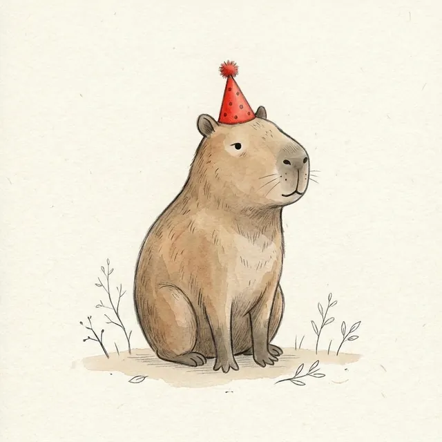
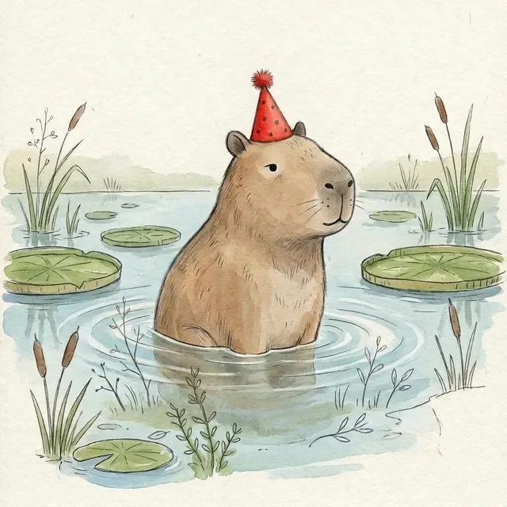
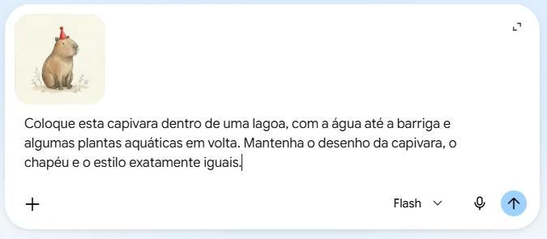
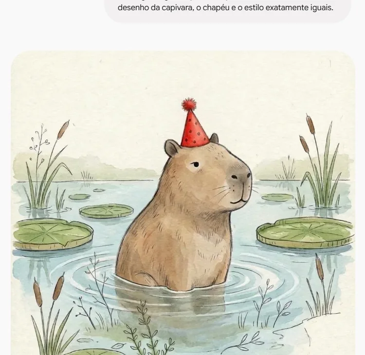
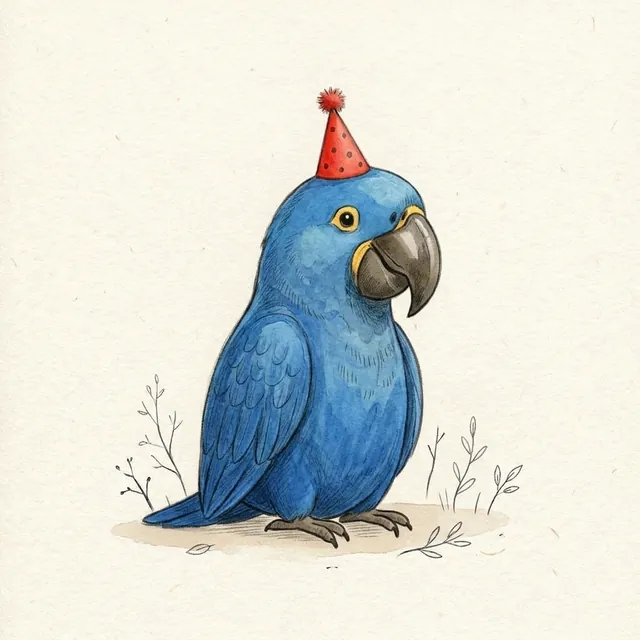
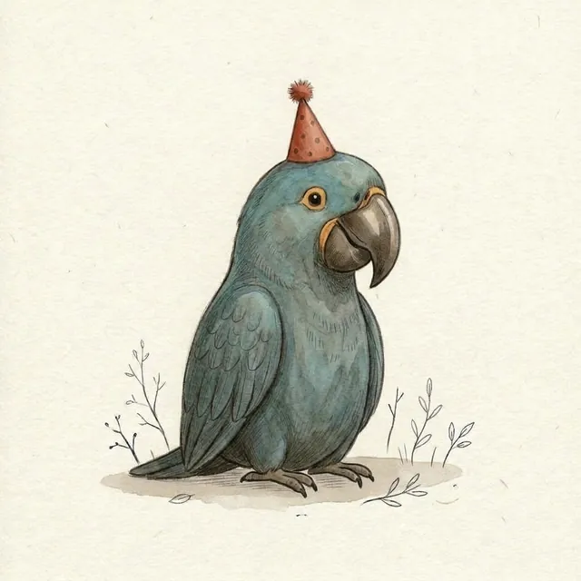
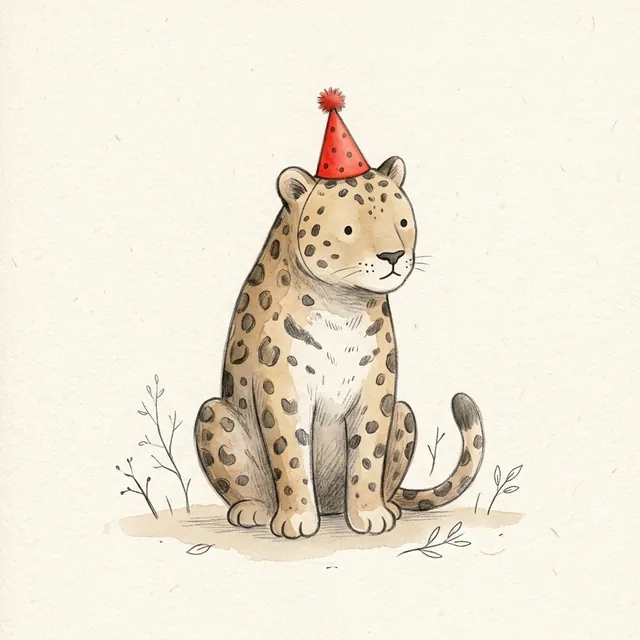
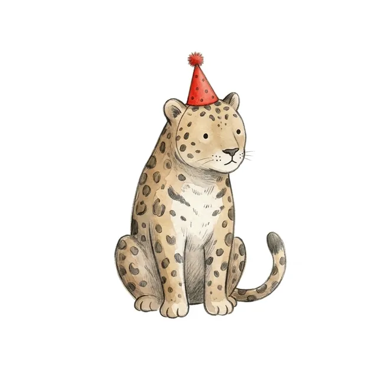

Tópico 5 · Criar e editar imagens
Editar uma imagem
Envie uma imagem ao Gemini e descreva o que deve mudar. No exemplo, vamos mexer nas cartas do jogo da memória

Você pedeColoque esta capivara dentro de uma lagoa. Mantenha o desenho da capivara igual.
o Gemini edita

Passo 1
Anexe a imagem
- Abra uma conversa nova e anexe a imagem pelo +, em Enviar arquivos.
- Pode ser uma imagem feita pela IA ou outra que você tenha: um desenho escaneado, a foto de um cartaz.
- Não precisa ativar Criar imagem: o pedido de mudança já deixa claro que você quer uma imagem de volta.
Comando (Prompt)
Coloque esta capivara dentro de uma lagoa, com a água até a barriga e algumas plantas aquáticas em volta. Mantenha o desenho da capivara, o chapéu e o estilo exatamente iguais.
Passo 2
Diga o que mudar e o que manter
- Descreva a mudança com detalhes, como no primeiro tutorial. É o trecho grifado.
- E diga também o que deve ficar igual. Sem isso, a IA pode redesenhar tudo.
- Envie pela seta.

Passo 3
Veja o resultado
- A capivara entrou na lagoa, e o desenho dela continuou o mesmo: chapéu, cor, expressão.
- A pose mudou um pouco, porque agora ela está dentro da água.
- Se algo mudou sem você pedir, diga na mesma conversa o que deve voltar ao que era.


Passo 4
Ajuste uma cor
- Lembra da arara azul vivo, que fugiu do padrão do baralho?
- Pedimos: "Deixe as cores desta arara mais terrosas e apagadas, combinando com as outras cartas do baralho. Não mude mais nada."
- Ela ficou num azul acinzentado, que conversa com as outras cartas.


Passo 5
Tire o fundo
- Pedimos: "Tire o fundo desta imagem: deixe a onça sozinha sobre um fundo totalmente branco, sem chão, sem galhinhos e sem a textura de papel. Não mude nada na onça."
- Com fundo branco, a figura fica fácil de recortar e colar num cartaz, numa atividade ou num slide.
- O fundo vem branco, não transparente.
Passo 6
Compare as edições
- Interativo: toque nos botões para ver cada edição.
- Você editou imagens só descrevendo a mudança, sem programa de edição.
- A regra de ouro: diga o que mudar e o que manter.
- Confira com atenção: a IA pode alterar pequenos detalhes sem avisar.